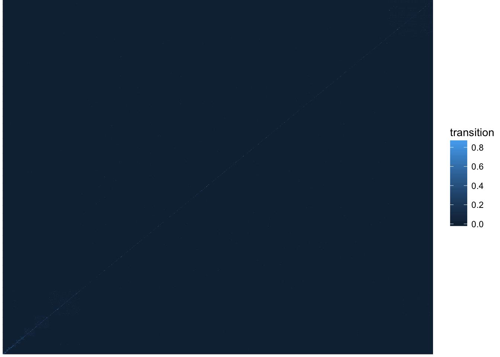
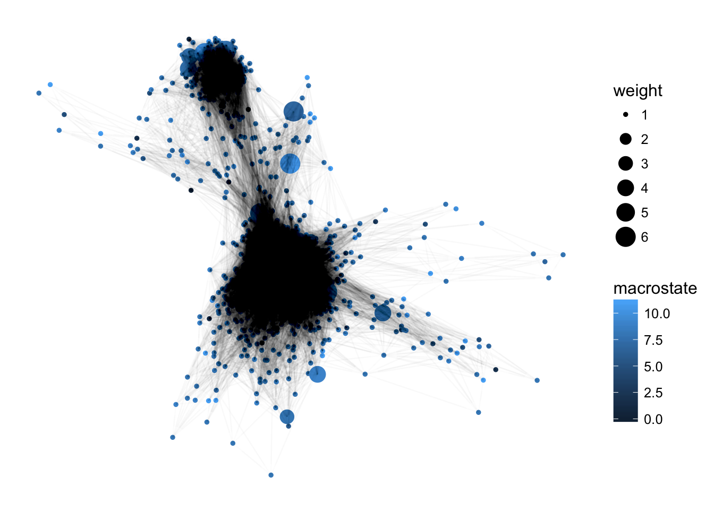
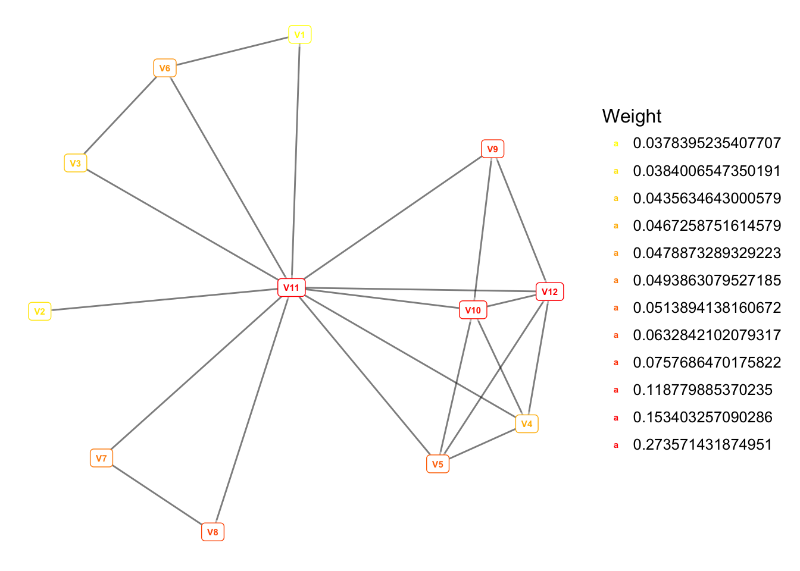

Network for graph-like data
Load packages, set up working environment.
If the packages cannot be found, please install first using install.packages() command.
library(ggnetwork)
library(sna)
library(reshape2)
library(ggplot2)- The “ggnetwork”" package provides a way to build network plots with ggplot2.
- The “sna” package contains a range of tools for social network analysis, including node and graph-level indices, structural distance and covariance methods, structural equivalence detection, network regression, random graph generation, and 2D/3D network visualization.
Import data
transition = read.table(url('https://raw.githubusercontent.com/MingChen0919/gst-colloquium-workshop-2018/master/content/datasets/John_datasets/transitionmatrix.dat'))Now, take a look at the data we just imported. Click Environment on the right board, and then click the transistion. If you are command line geek, you can also type View(transition) in console.
Plotting heatmap
Firt, I will help you to do some data transformation and reshaping.
# Change data into a matrix with same row names and column names.
row.names(transition) <- colnames(transition)
transition_mat <- as.matrix(transition)
melt_mat <- melt(transition_mat)Now, use ggplot2 to make a heatmap using the ‘melt_mat’ data.
ggplot(data = melt_mat) +
geom_tile(mapping = aes(x=Var1, y=Var2, fill=value)) +
scale_fill_gradient(name= "transition") +
theme_void()
Think about how you can make the heatmap look better?
- using log values
- change scale colors
- anything else?
Practice: try to make your heatmap looks better. (5 min)
Simple network
We can also use the transition data to make network plots. First, an example of a messy network figure using only transition data values. (You don’t have to try this)
n = network(transition)
n1 = ggnetwork(n)
n1$x = n1$x[, 1]
n1$y = n1$y[, 1]
n1$xend = n1$xend[, 1]
n1$yend = n1$yend[, 1]
ggplot(n1, aes(x = x, y = y, xend = xend, yend = yend)) +
geom_nodes() +
geom_edges() +
theme_blank()
Informative network
Add attributes to vertices
Assign an important level to each vertex. Importance is ramdonly assigned here since we don’t have this type of data. However, in the real world you may have information e.g. p-value, FDR, correlation coeffient to determine the importance of your data.
Assign group to vertex. Groups are also assigned ramdonly, just want to give you a feeling of how to deal with multidimentional data.
n = network(transition)
n %v% "importance" = sample(1:6, nrow(transition), replace = TRUE)
n %v% "group" = sample(c("A", "B", "C"), nrow(transition), replace = TRUE)- Visualize transition, group and importance information in one figure.
n2 = ggnetwork(n)
n2$x = n2$x[, 1]
n2$y = n2$y[, 1]
n2$xend = n2$xend[, 1]
n2$yend = n2$yend[, 1]
ggplot(n2, mapping = aes(x = x, y = y, xend = xend, yend = yend)) +
geom_nodes(mapping = aes(color = group, size = importance)) +
geom_edges() +
theme_blank()
Modify the basic network
a. Adjust edges.
- To change the transprancy of edges.
ggplot(n2, mapping = aes(x = x, y = y, xend = xend, yend = yend)) +
geom_nodes(mapping = aes(color = group, size = importance)) +
geom_edges(alpha = 0.05) +
theme_blank()
- Set a threshold for edge display.
threshold = 0.1
transition2 = transition
transition2[transition2 < 0.1] = 0
n = network(transition2)
n %v% "importance" = sample(1:6, nrow(transition), replace = TRUE)
n %v% "group" = sample(c("A", "B", "C"), nrow(transition), replace = TRUE)
n1 = ggnetwork(n)
n1$x = n1$x[, 1]
n1$y = n1$y[, 1]
n1$xend = n1$xend[, 1]
n1$yend = n1$yend[, 1]
ggplot(n1, mapping = aes(x = x, y = y, xend = xend, yend = yend)) +
geom_nodes(mapping = aes(color = group, size = importance)) +
geom_edges(alpha = 0.8) +
theme_blank()
b. Add labels to nodes (Optional)
We will not include this part in our workshop, please try it yourself if you are interested in and would like to use this type of plot in your research.
ggplot(n1, mapping = aes(x = x, y = y, xend = xend, yend = yend)) +
geom_edges(alpha = 0.8) +
geom_nodelabel(aes(label = vertex.names, color = as.factor(importance)),
cex = 2,
fontface = "bold") +
scale_color_manual(name = "Importance", values = colorRampPalette(c("yellow", "red"))(6)) +
theme_blank()